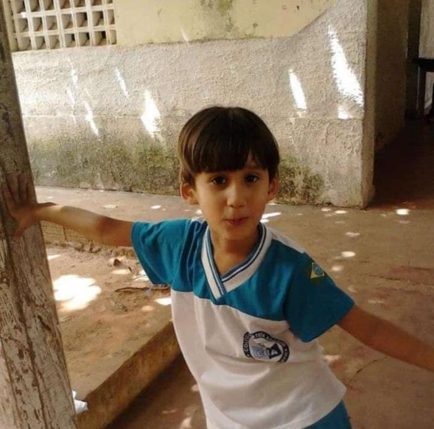
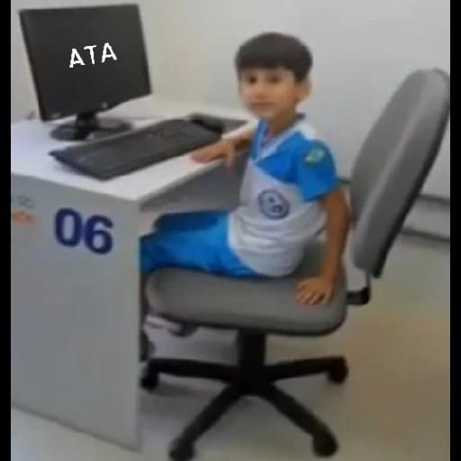

Luis Eduardo Silva Soares, filho de Jesuana Ribeiro Silva e Marcos Antônio Araújo Soares, nasceu no dia 23 de fevereiro de 2006, às 12 horas no hospital Sinhá Castelo, em Caxias (MA). Tem mais duas irmãs, Lara Luiza, a mais velha, e Marília, a mais nova.
Luis foi criado apenas pela mãe, foi uma criança muito doce, tímida e com uma imaginação muito fértil, gostava muito de assistir desenhos, em especial os da Cartoon Network, porém não tinha muito tempo para assistir, pois estudava o dia inteiro.
 Hoje em dia (2024), Luis já tem 18 anos, seu maior sonho é trabalhar na área da aviação, mas enquanto isso, está buscando qualificação na área da tecnologia da informação, está cursando Análise e Desenvolvimento de Sistemas na Unifacema, e pretende seguir carreira como progamador Front-End.